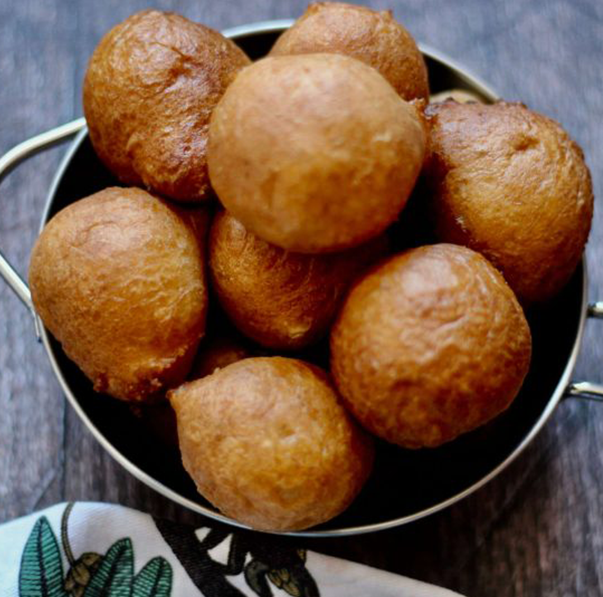
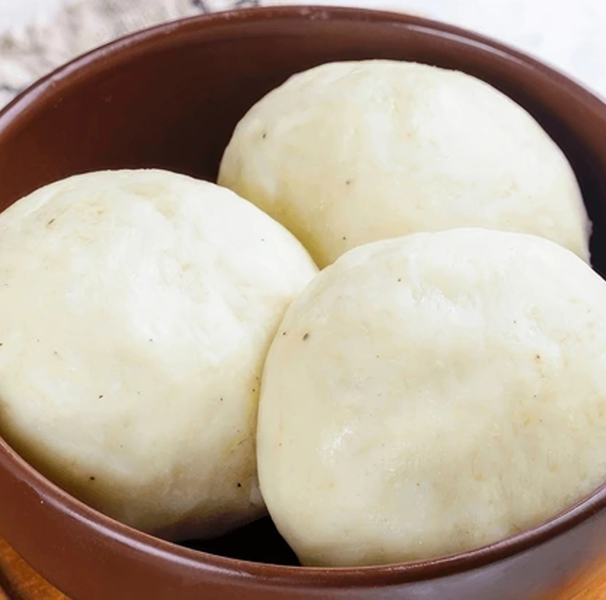
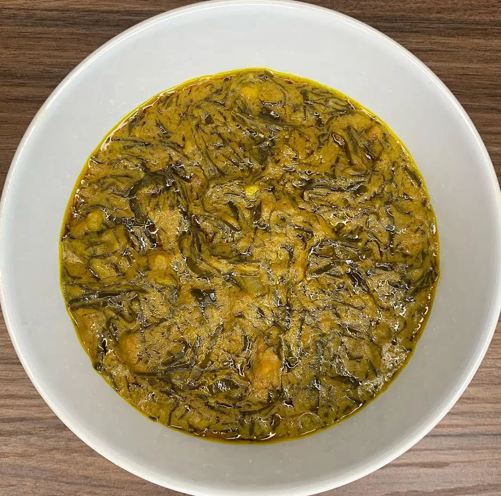

Food from the Democratic Republic of Congo
The Democratic Republic of the Congo is a major player on the global stage of cuisine. This month, we’ll be featuring three iconic dishes: Mikate, Fufu, and Fumbwa. If you're unfamiliar with these dishes, don't worry—we’ll explore what each one is, the ingredients required to make them, and the best times of day to enjoy them.
Mikate
Mikate are golden brown, fluffy balls that make a great breakfast or snack throughout the day. They require simple ingredients.

Mikate Ingredients:
- 250g of flour
- 200g of room temperature water
- 100g of sugar
- 1 packet dehydrated yeast
- 1 tsp vanilla extract
- 1/2 tsp salt
- Frying oil
Instructions:
- Mix the room temperature water with the yeast and let it activate for 10 minutes.
- In a bowl, combine the flour, sugar, vanilla, and salt.
- Mix the ingredients with your hands until you get a thick, smooth dough. Let it rest for a couple of hours.
- Heat frying oil in a pan. Once hot, grab small dollops of dough and drop them into the oil, frying for about five minutes until golden brown.
- Let the Mikate cool, then enjoy!
Fufu
Fufu is a starchy staple that pairs well as a side dish to any main course. While it's enjoyed across Africa, we’ll focus on the Congolese preparation.

Fufu Ingredients:
- 3 cups boiling water
- 1 cup cold water
- 3/4 cup cassava flour
- 1/2 cup maize flour
- 1/2 tsp salt
- 1/4 cup polenta
- Oil
Instructions:
- Mix the cassava flour, maize flour, and polenta with 1 cup of cold water.
- Boil 3 cups of water and add salt.
- Gradually add the wet flour mixture to the boiling water while stirring continuously for about 30 minutes until thickened.
- Use a small amount of oil to shape the Fufu into a ball, then wrap it in plastic wrap to cool. Fufu is great for an evening meal.
Fumbwa
Fumbwa is a nutritious dish high in iron and calcium, supporting blood health and strong bones. This comforting meal is perfect for the evening and features leafy greens, palm oil, and ground peanuts.

Fumbwa Ingredients:
- 3 onions
- 3 tablespoons palm oil
- 2 garlic cloves
- 2 tomatoes
- 1 cube Maggi seasoning
- 1 cup ground peanuts
- 1/2 cup water
- Baby spinach, chopped
Instructions:
- Boil water in a pot and add the spinach, cooking until it wilts.
- Once the water reduces slightly, add the remaining ingredients and stir until everything is ready to serve.